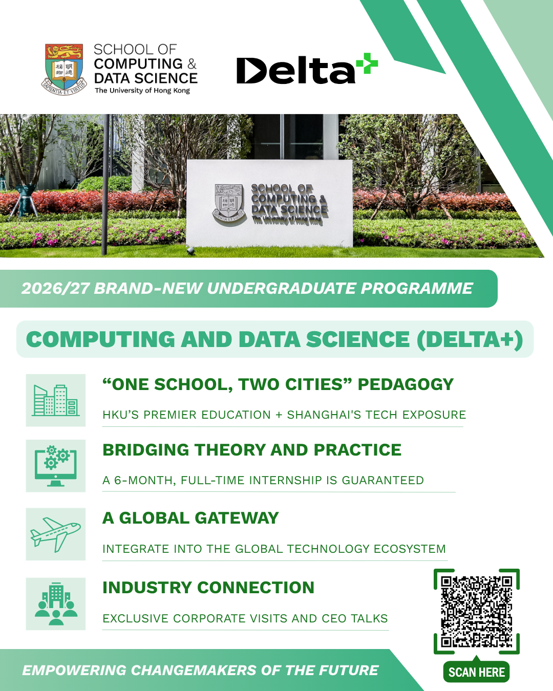
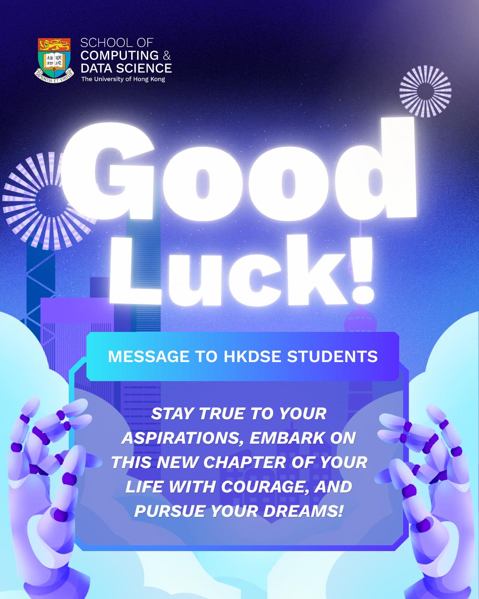

PROJECT ASSISTANT · DIGITAL CHANNELS
Michelle's
Digital Mission
A short journey through my experience, interests and working style.
GREEN PLANET
My Growth Path
Follow the path to explore my experience, education and selected work.
Move over a gold star to discover a project.
HKU CDS Info Day HighlightsVideo · Instagram HKU CDS Shanghai Open Day
Video · Instagram Delta+ Promotional Video
Video · YouTube Temples Over Trends
Multimedia website HKU CDS photography album


“Which story shall we see next?”
BLOOM PLANET
What I Enjoy Doing
Each gold star carries a small idea. Hover over one to hear it.
CLEAR SKIES, CLEAR STEPS
How I Handle Challenges
Move your mouse over a cloud, then come and help them.
TOOLKIT PLANET
Michelle's Manual
Open the toolkit to see how I work.
THANK YOU FOR TRAVELLING WITH ME